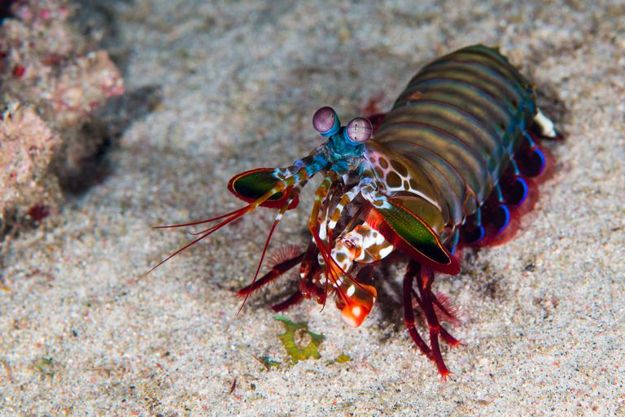

Fatos sobre o Stomatopoda
Odontodactylus scyllarus
| Reino | Animalia |
|---|---|
| Filo | Arthropoda |
| Subfilo | Crustacea |
| Classe | Malacrostaca |
| Subclasse | Hoplocarida |
| Ordem | Stomatopoda |
Onde vive:
O Stomatopoda vive em águas mornas e rasas.
Tamanho:
Normalmente, chega a ter entre 15 e 30 centímetros de comprimento.
Enxerga mais cores:
Esta criatura possui dezesseis cones receptores de cores.